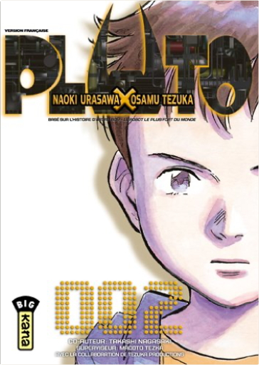

Books
Movies
Albums
Videogames
Games
BD
BD Camille
Blu-ray
Business
Camille
Comics
Cooking
Lego
Manga
Pauline
Photography
Sport
Star Wars
T'choupi
Travel
TV Shows
Un livre dont vous êtes le héro
Vinyl
Walt Disney
5
6
7
8
9
fullmetal alchemist, tome 27
hiromu arakawa
hayao miyazaki, nuances d'une oeuvre
victor lopez
jin-roh maniaxx
kadokawa shoten
4
l'art de mon voisin totoro
hayao miyazaki
178 pages Couleurs Année : 1989 (Japon)
manhole, tome 1
tetsuya tsutsui
3.5
manhole, tome 2 :
tetsuya tsutsui
manhole, tome 3
tetsuya tsutsui
4
neon-genesis evangelion - iron maiden 2nd, tome 1
fumino hayashi, gainax
2
pluto, tome 1
naoki urasawa, osamu tezuka
5

pluto, tome 2
naoki urasawa, osamu tezuka
5
pluto, tome 3
naoki urasawa, osamu tezuka
3
pluto, tome 4
naoki urasawa, osamu tezuka
3
5
6
7
8
9


 Made with Delicious Library Made with Delicious Library
Made with Delicious Library Made with Delicious Library